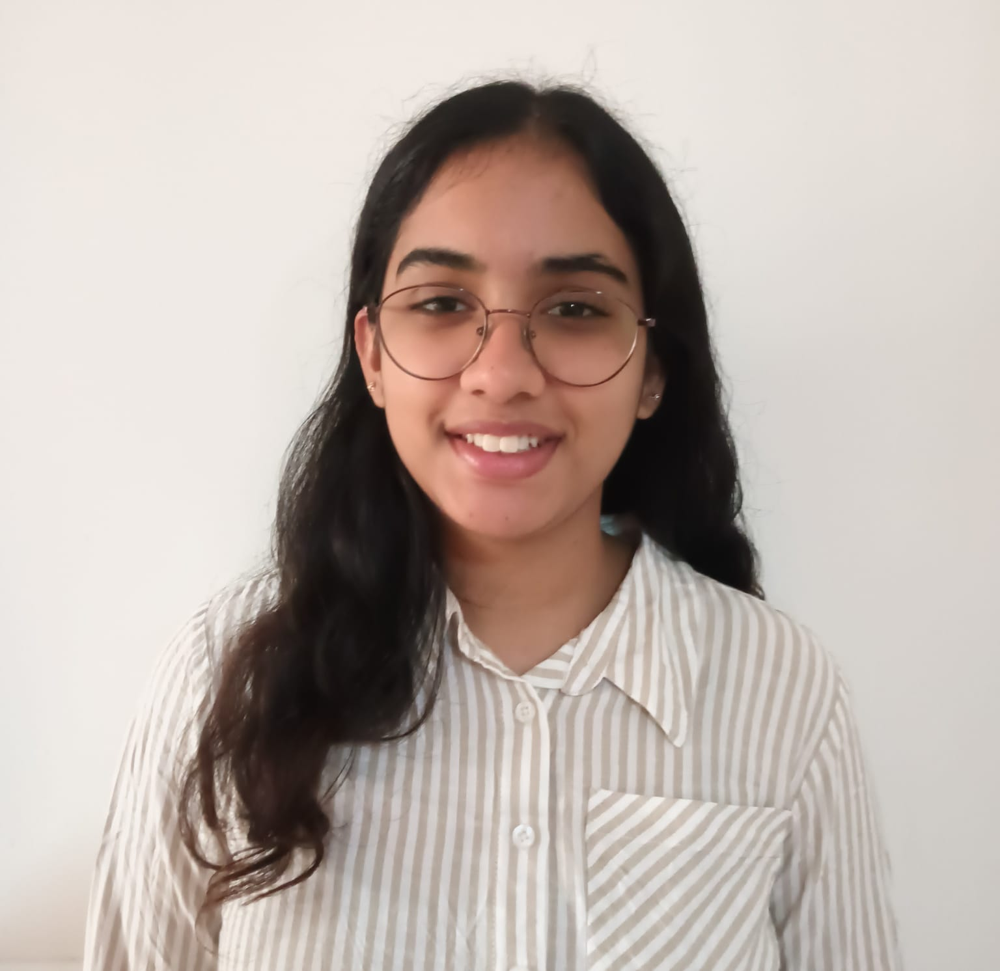

K Devasree Reddy

Summary
Enthusiastic Computer Science student with foundation in C programming, Python, eager to apply skills in web development.
Education
- B.E. in Computer Science Engineering(Ongoing)
BMS Institue Of Technology
- PUC(11th and 12th), PCMC
Sindhi PU College, (2024)
- ICSE- 10th grade
Greenfield Public School, (2022)
Technical Skills
- Programming Languages: Python, C
- Tools/Platforms: GitHub, VS Code
- Interests: Web Development, Problem Solving
Academic Projects
- Birthday Invite Project on HTML
- Completed multiple C programming lab projects including arrays, strings, matrices, pointers, and data structures
- Built various Python projects focusing on lists, tuples, dictionaries, strings and, file handling
Achievements and Activities
- Participated in coding challenges on HackerRank
- Took part in various hackathons, science competitions
Soft Skills
- Teamwork, Problem-Solving, Time Management, Communication
Hobbies and Interests
- Playing Guitar, Cooking, Sports(Badminton and Swimming)